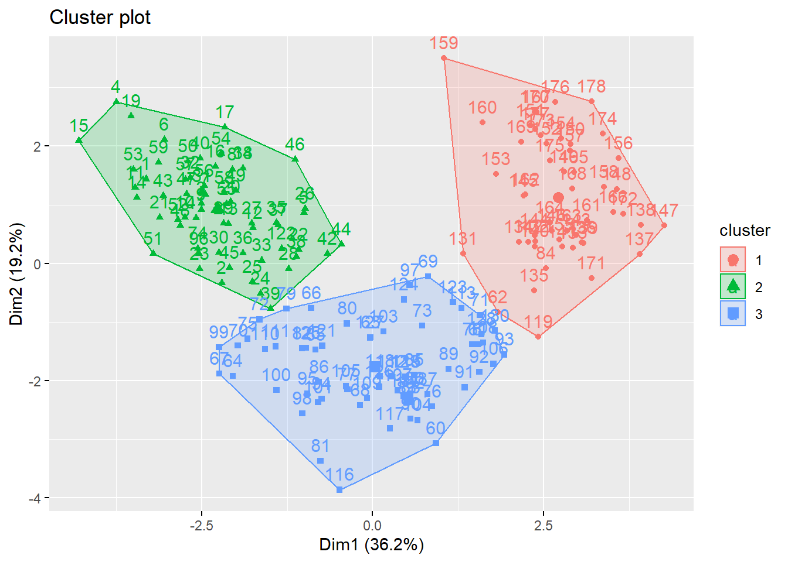

#'Reset environment before starting
set.seed(NULL)
rm(list = ls(all.names = TRUE))
#factoextra : to determine the optimal number clusters data visualization.
#fpc: cluster validation with silhouette width
library(factoextra)## Loading required package: ggplot2## Welcome! Want to learn more? See two factoextra-related books at https://goo.gl/ve3WBalibrary(fpc)## Warning: package 'fpc' was built under R version 4.1.1#'Load the data
# Read the contents of the csv file into a variable called wine_original
# "header=TRUE" implies that header is present in the data file
wine_original <- read.csv("./data/wines.csv", header = TRUE)
#'Examine the dataset
#str shows the structure of the object :variable type
str(wine_original)## 'data.frame': 178 obs. of 14 variables:
## $ Alcohol : num 14.2 13.2 13.2 14.4 13.2 ...
## $ Malic.acid : num 1.71 1.78 2.36 1.95 2.59 1.76 1.87 2.15 1.64 1.35 ...
## $ Ash : num 2.43 2.14 2.67 2.5 2.87 2.45 2.45 2.61 2.17 2.27 ...
## $ Alcalinity.of.ash : num 15.6 11.2 18.6 16.8 21 15.2 14.6 17.6 14 16 ...
## $ Magnesium : int 127 100 101 113 118 112 96 121 97 98 ...
## $ Total.phenols : num 2.8 2.65 2.8 3.85 2.8 3.27 2.5 2.6 2.8 2.98 ...
## $ Flavanoids : num 3.06 2.76 3.24 3.49 2.69 3.39 2.52 2.51 2.98 3.15 ...
## $ Nonflavanoid.phenols : num 0.28 0.26 0.3 0.24 0.39 0.34 0.3 0.31 0.29 0.22 ...
## $ Proanthocyanins : num 2.29 1.28 2.81 2.18 1.82 1.97 1.98 1.25 1.98 1.85 ...
## $ Color.intensity : num 5.64 4.38 5.68 7.8 4.32 6.75 5.25 5.05 5.2 7.22 ...
## $ Hue : num 1.04 1.05 1.03 0.86 1.04 1.05 1.02 1.06 1.08 1.01 ...
## $ OD280.OD315.of.diluted.wines: num 3.92 3.4 3.17 3.45 2.93 2.85 3.58 3.58 2.85 3.55 ...
## $ Proline : int 1065 1050 1185 1480 735 1450 1290 1295 1045 1045 ...
## $ Region : chr "South" "South" "South" "South" ...#summary produces descriptive stats for the variables in the data
summary(wine_original)## Alcohol Malic.acid Ash Alcalinity.of.ash
## Min. :11.03 Min. :0.740 Min. :1.360 Min. :10.60
## 1st Qu.:12.36 1st Qu.:1.603 1st Qu.:2.210 1st Qu.:17.20
## Median :13.05 Median :1.865 Median :2.360 Median :19.50
## Mean :13.00 Mean :2.336 Mean :2.367 Mean :19.49
## 3rd Qu.:13.68 3rd Qu.:3.083 3rd Qu.:2.558 3rd Qu.:21.50
## Max. :14.83 Max. :5.800 Max. :3.230 Max. :30.00
## Magnesium Total.phenols Flavanoids Nonflavanoid.phenols
## Min. : 70.00 Min. :0.980 Min. :0.340 Min. :0.1300
## 1st Qu.: 88.00 1st Qu.:1.742 1st Qu.:1.205 1st Qu.:0.2700
## Median : 98.00 Median :2.355 Median :2.135 Median :0.3400
## Mean : 99.74 Mean :2.295 Mean :2.029 Mean :0.3619
## 3rd Qu.:107.00 3rd Qu.:2.800 3rd Qu.:2.875 3rd Qu.:0.4375
## Max. :162.00 Max. :3.880 Max. :5.080 Max. :0.6600
## Proanthocyanins Color.intensity Hue OD280.OD315.of.diluted.wines
## Min. :0.410 Min. : 1.280 Min. :0.4800 Min. :1.270
## 1st Qu.:1.250 1st Qu.: 3.220 1st Qu.:0.7825 1st Qu.:1.938
## Median :1.555 Median : 4.690 Median :0.9650 Median :2.780
## Mean :1.591 Mean : 5.058 Mean :0.9574 Mean :2.612
## 3rd Qu.:1.950 3rd Qu.: 6.200 3rd Qu.:1.1200 3rd Qu.:3.170
## Max. :3.580 Max. :13.000 Max. :1.7100 Max. :4.000
## Proline Region
## Min. : 278.0 Length:178
## 1st Qu.: 500.5 Class :character
## Median : 673.5 Mode :character
## Mean : 746.9
## 3rd Qu.: 985.0
## Max. :1680.0#'Preprocessing
#We do not want to cluster region in the last column
#Remove this and create a new dataframe to work with
wine.df<- wine_original[ , -c(14)] # Drop region columns.
#Z-transform
wine.scaled.df<-as.data.frame(scale(wine.df))
#'Set the seed
#Refer : http://rfunction.com/archives/62 K-means algorithm uses random number
#simulations to generate solutions.
# When we use any algorithm that uses random #number to simulate
# we have to set the seed in r environment to get reproducible results
set.seed(96743)
#'Number of clusters
#To identify number of clusters apriori
# Use wss and silhouette metrics
#Plots Total within-clusters sum of squares vs. Number of clusters
fviz_nbclust(wine.scaled.df, kmeans, method = "wss")#'The plot shows the elbow bend at **3 **
#Beyond this bend there is no value obtained in terms of wss
#Plots silhouette
fviz_nbclust(wine.scaled.df, kmeans, method = "silhouette")#'The plot shows the peak at **3 ** again
#'Run k-means with 3 clusters
wine.seg <- kmeans(wine.scaled.df,centers = 3)
wine.seg## K-means clustering with 3 clusters of sizes 51, 62, 65
##
## Cluster means:
## Alcohol Malic.acid Ash Alcalinity.of.ash Magnesium Total.phenols
## 1 0.1644436 0.8690954 0.1863726 0.5228924 -0.07526047 -0.97657548
## 2 0.8328826 -0.3029551 0.3636801 -0.6084749 0.57596208 0.88274724
## 3 -0.9234669 -0.3929331 -0.4931257 0.1701220 -0.49032869 -0.07576891
## Flavanoids Nonflavanoid.phenols Proanthocyanins Color.intensity Hue
## 1 -1.21182921 0.72402116 -0.77751312 0.9388902 -1.1615122
## 2 0.97506900 -0.56050853 0.57865427 0.1705823 0.4726504
## 3 0.02075402 -0.03343924 0.05810161 -0.8993770 0.4605046
## OD280.OD315.of.diluted.wines Proline
## 1 -1.2887761 -0.4059428
## 2 0.7770551 1.1220202
## 3 0.2700025 -0.7517257
##
## Clustering vector:
## [1] 2 2 2 2 2 2 2 2 2 2 2 2 2 2 2 2 2 2 2 2 2 2 2 2 2 2 2 2 2 2 2 2 2 2 2 2 2
## [38] 2 2 2 2 2 2 2 2 2 2 2 2 2 2 2 2 2 2 2 2 2 2 3 3 1 3 3 3 3 3 3 3 3 3 3 3 2
## [75] 3 3 3 3 3 3 3 3 3 1 3 3 3 3 3 3 3 3 3 3 3 2 3 3 3 3 3 3 3 3 3 3 3 3 3 3 3
## [112] 3 3 3 3 3 3 3 1 3 3 2 3 3 3 3 3 3 3 3 1 1 1 1 1 1 1 1 1 1 1 1 1 1 1 1 1 1
## [149] 1 1 1 1 1 1 1 1 1 1 1 1 1 1 1 1 1 1 1 1 1 1 1 1 1 1 1 1 1 1
##
## Within cluster sum of squares by cluster:
## [1] 326.3537 385.6983 558.6971
## (between_SS / total_SS = 44.8 %)
##
## Available components:
##
## [1] "cluster" "centers" "totss" "withinss" "tot.withinss"
## [6] "betweenss" "size" "iter" "ifault"#'The results show the following
# 1. The number of clusters and the number of rows in each cluster
# 2. The means of the variables in each cluster
# 3. Clustering vector: A vector of integers that shows the cluster each observation belongs to
# Cluster size
wine.seg$size## [1] 51 62 65# Cluster means
wine.seg$centers## Alcohol Malic.acid Ash Alcalinity.of.ash Magnesium Total.phenols
## 1 0.1644436 0.8690954 0.1863726 0.5228924 -0.07526047 -0.97657548
## 2 0.8328826 -0.3029551 0.3636801 -0.6084749 0.57596208 0.88274724
## 3 -0.9234669 -0.3929331 -0.4931257 0.1701220 -0.49032869 -0.07576891
## Flavanoids Nonflavanoid.phenols Proanthocyanins Color.intensity Hue
## 1 -1.21182921 0.72402116 -0.77751312 0.9388902 -1.1615122
## 2 0.97506900 -0.56050853 0.57865427 0.1705823 0.4726504
## 3 0.02075402 -0.03343924 0.05810161 -0.8993770 0.4605046
## OD280.OD315.of.diluted.wines Proline
## 1 -1.2887761 -0.4059428
## 2 0.7770551 1.1220202
## 3 0.2700025 -0.7517257#'Visualise the clusters
fviz_cluster(wine.seg, data = wine.scaled.df)
#'Tabulate the clusters and Profile# Small fig.width
#This is an excel screenshot to see the clusters clearly
img1_path <- "wine.png"
knitr::include_graphics(img1_path)#Each row represents a cluster
#Get the max value loaded into each cluster
# Row 1 - Color intensity-Malic acid
# Row 2 - High in Proline/ Flavnoids-Low in ash akanity and non-flavnoid
# Row 3 - CDilute
mycluster_profile<-data.frame(
cbind(wine_original,"cluster_number"=wine.seg$cluster))
# Add the names we gave for the clusters
mycluster_profile$cluster_name[mycluster_profile$cluster_number==1] <- "Color intensity-Malic acid"
mycluster_profile$cluster_name[mycluster_profile$cluster_number==2] <- "Proline"
mycluster_profile$cluster_name[mycluster_profile$cluster_number==3] <- "Dilute"
#Write the file to excel for further analysis
write.csv(mycluster_profile,file = "cluster_profiles.csv")